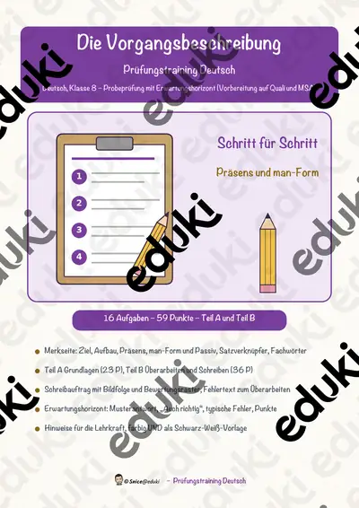
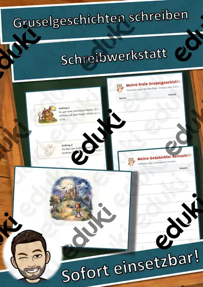

Vorgangsbeschreibung: Arbeitsblätter für Klasse 5–8 (Deutsch)
Vorgänge genau beschreiben ist eine zentrale Textform der Klassen 3 bis 6. Die Schülerinnen und Schüler lernen, Schritte in richtiger Reihenfolge, im Präsens und mit treffenden Verben aufzuschreiben.
Gearbeitet wird in der Regel an Schrittfolge, Zeitwörter im Präsens und Fachbegriffe, ergänzt um Materialliste, Reihenfolgewörter und Anleitung.
Wo genau im Lehrplan das Thema steht, unterscheidet sich von Land zu Land, häufig im Fach Deutsch in der Sekundarstufe I (Klasse 5–8). Gemeinsames Ziel: die Kinder beschreiben einen Ablauf so genau, dass andere ihn nachmachen können.
Für den Einstieg in Vorgangsbeschreibung bieten sich Aufgaben zu Schrittfolge an, zum Üben solche zu Zeitwörter im Präsens und Fachbegriffe, zur Wiederholung vor einer Lernkontrolle ein Blick auf Anleitung. Die Lösungen liegen bei, sodass im Unterricht niemand nachschlagen muss. Die Prüfungstrainings bereiten gezielt auf Klassenarbeiten und Abschlussprüfungen vor.
Die Auswahl zum Thema umfasst derzeit 19 Titel, zum Beispiel Schreibwerkstatt Vorgangsbeschreibung, Gruselgeschichten schreiben: Schreibwerkstatt und Schreibwerkstatt Vorgangsbeschreibung: Einen. Dazu zählen 1 Prüfungstraining und 1 Lückentext mit Hörverstehen für Klasse 4–8. Ein Test mit einem Partner, der nur nach der Beschreibung bastelt, zeigt sofort, wo Schritte fehlen.
Das gehört zum Thema
Passende Arbeitsblätter und Materialpakete

Schreibwerkstatt Vorgangsbeschreibung – Gesamtpaket: alle 12 Einheiten in 3 Stufen (Klasse 3–5)

Schreibwerkstatt Vorgangsbeschreibung – Paket Alltag, Sport & Technik: 4 Einheiten in 3 Stufen (Klasse 3–5)

Schreibwerkstatt Vorgangsbeschreibung – Paket Basteln & Natur: 4 Einheiten in 3 Stufen (Klasse 3–5)

Schreibwerkstatt Vorgangsbeschreibung – Paket Küche & Experimente: 4 Einheiten in 3 Stufen (Klasse 3–5)

Die Vorgangsbeschreibung – Prüfungstraining Deutsch (Klasse 8)

Gruselgeschichten schreiben: Schreibwerkstatt mit Hilfen

Schreibwerkstatt Vorgangsbeschreibung: Einen Text am Computer speichern – 3 Stufen & Kurztest (Klasse 3–5)

Schreibwerkstatt Vorgangsbeschreibung: Futterglocke für Vögel herstellen – 3 Stufen & Kurztest (Klasse 3–5)

Schreibwerkstatt Vorgangsbeschreibung: Seilspringen lernen – 3 Stufen & Kurztest (Klasse 3–5)

Schreibwerkstatt Vorgangsbeschreibung: Schuhe mit Schleife binden – 3 Stufen & Kurztest (Klasse 3–5)

Schreibwerkstatt Vorgangsbeschreibung: Hände richtig waschen – 3 Stufen & Kurztest (Klasse 3–5)

Schreibwerkstatt Vorgangsbeschreibung: Freundschaftsband flechten – 3 Stufen & Kurztest (Klasse 3–5)

Schreibwerkstatt Vorgangsbeschreibung: Kresse säen und ernten – 3 Stufen & Kurztest (Klasse 3–5)

Schreibwerkstatt Futterglocke fuer Voegel herstellen

Schreibwerkstatt Vorgangsbeschreibung: Papierflieger falten – 3 Stufen & Kurztest (Klasse 3–5)

Schreibwerkstatt Vorgangsbeschreibung: Tanzende Rosinen – 3 Stufen & Kurztest (Klasse 3–5)

Schreibwerkstatt Vorgangsbeschreibung: Knete selbst herstellen – 3 Stufen & Kurztest (Klasse 3–5)

Schreibwerkstatt Vorgangsbeschreibung: Obstsalat zubereiten – 3 Stufen & Kurztest (Klasse 3–5)

Schreibwerkstatt Vorgangsbeschreibung: Pfannkuchen backen – 3 Stufen & Kurztest (Klasse 3–5)
Häufige Fragen
Für welche Klassenstufe passen die Arbeitsblätter zu Vorgangsbeschreibung?
Die 19 Materialien zu diesem Thema sind für Klasse 4–8 ausgelegt, die meisten davon für Klasse 4. Einzelne Titel lassen sich mit Anpassung auch eine Stufe darunter oder darüber einsetzen.
Welche Inhalte decken die Materialien zu Vorgangsbeschreibung ab?
Inhaltlich reicht die Auswahl von Schrittfolge über Zeitwörter im Präsens und Fachbegriffe bis zu Reihenfolgewörter; Details stehen bei den einzelnen Materialien.
Wie setze ich Vorgangsbeschreibung im Unterricht ein?
Ein Test mit einem Partner, der nur nach der Beschreibung bastelt, zeigt sofort, wo Schritte fehlen. So entsteht aus den Blättern eine kleine Einheit, die sich auf zwei bis drei Stunden verteilen lässt.
Mehr Material nach Fach und Klasse
Verwandte Lehrplanthemen
- Satzglieder und Satzbau (Deutsch, Klasse 4–8)
- Inhaltsangabe und Textarten (Deutsch, Klasse 6–10)
- Bewerbung und Praktikum (Deutsch, Klasse 8–10)
- Gedichte und Balladen (Deutsch, Klasse 3–10)
- Literatur: Kurzgeschichte, Roman und Jugendbuch (Deutsch, Klasse 7–10)